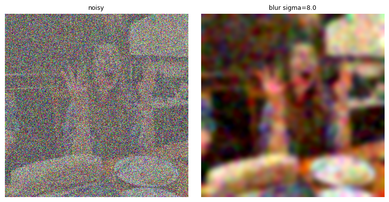

Project 03 · Fall 2026
Flow Models:
Sampling & Training
Esther Ng Xin Yue
Part A
Exploring the Power of Flow Models
I used the pretrained PixNerd flow model to follow a learned velocity field from noise to an image. The experiments below use Euler integration with a step size of 0.02; guided examples use classifier-free guidance with weight 7.
Sections 1.1–1.4
Noising, Denoising & Velocity
For one personal photograph, I use the same sampled noise throughout. As time increases, the linear interpolation preserves more of the original. The learned one-step estimate restores recognizable structure much more effectively than the Gaussian-blur baseline, especially at high noise.

1.2 · Gaussian blur baseline



1.3 · One-step flow-model denoising


1.4 · Predicted versus ground-truth update


Sections 1.5–2.1
Iterative Sampling & Guidance
Euler integration recomputes the velocity after every update, allowing the trajectory to progressively remove noise. For ordinary conditional sampling without CFG, I started from five independent noise states; classifier-free guidance uses the same starting states, so the difference is attributable to guidance.


Observation: the broad photo prompt produces varied image content, but only weakly constrains the subject. With the same initial noise, CFG makes the samples more coherent and more strongly photo-like, while reducing their diversity.
Section 3.1
Image-to-Image Editing
Each panel begins with the input and then uses the seven required starting times: 0.02, 0.04, 0.06, 0.10, 0.14, 0.25, and 0.50. Lower start times give the sampler more freedom to reinterpret the input; higher ones preserve it.
Generic “a high quality photo” prompt


Web image and hand drawings


Sections 3.2–3.4
Text Edits, Anagrams & Hybrids
Text prompts steer the denoising trajectory while the starting time balances prompt influence against input preservation. For visual anagrams, I average a normal guided velocity with the inverse-rotated guided velocity of a second prompt. For hybrids, I combine low-frequency velocity from the distant subject with high-frequency velocity from the close subject.
3.2 · Text-guided image editing


3.3 · Visual anagrams


3.4 · Hybrid images


Part B
Flow Matching from Scratch
I trained UNets on MNIST, beginning with one-step denoising and then learning a time-conditioned flow field. The conditional model adds digit-class conditioning and classifier-free guidance to make samples controllable.
Part 1
Single-Step Denoising UNet
The model is trained with an L2 reconstruction loss. The first visualization applies the required range of Gaussian noise levels to a held-out MNIST digit; subsequent panels show the trained model’s behavior.


Pure-noise observation: with unrelated noise as input and an MSE target, the model cannot infer a particular digit. Its outputs tend toward blurred, average digit-like strokes—the conditional mean that minimizes squared error over many possible targets.
Parts 2.1–2.3
Time-Conditioned Flow Matching
The time-conditioned UNet learns the velocity x₁ − x₀ for random interpolated states. During sampling, repeated Euler updates transport a Gaussian-noise image toward the digit distribution.


Parts 2.4–2.6
Class-Conditioned Flow Matching
Class labels are encoded as one-hot vectors, with 10% conditioning dropout during training. At sampling time, guidance scale γ = 5.0 combines conditioned and unconditioned velocities; every row below contains four instances of one requested digit.


Scheduler-free experiment
Constant learning rate: 3 × 10−3
I removed the exponential scheduler and trained a separate model at a fixed 3e-3 learning rate, chosen to sit near the middle-to-late portion of the prescribed 1e-2 → 1e-3 schedule. The loss remains stable and the final samples retain good class-specific structure, showing that a suitably conservative constant rate can replace the decay schedule here.


Takeaway
Across both parts, iterative velocity prediction is the key idea: a pretrained flow can reshape photographs into new images, while a small learned flow can gradually turn MNIST noise into controlled digit samples.